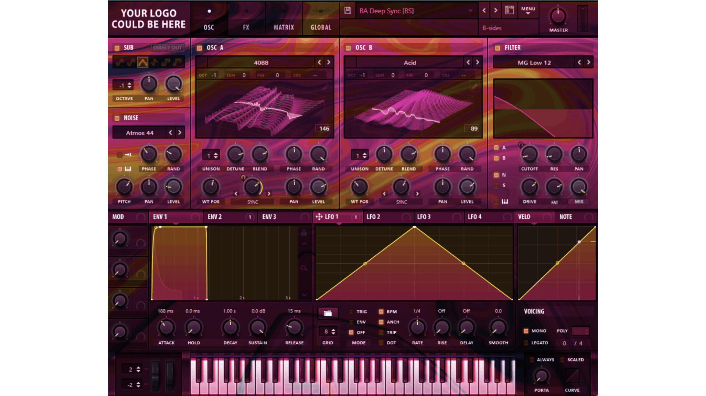

Check out my past projects!

As a music producer, I got interested in designing vsts (visrual synthesizers) The image presents one of my takes on a classic XFer Serum plugin.
See moreI like music! and I like expeimenting with sound, both digitally and in analog. Mainly, I foccus on electronic music and ambient.
See moreAs a part of my arts exam "Light, Shape and Color"I arranged a performance with projection mapping and sound responsive visuals.
See moreI also like experimenting with #d spaces, Blender in particular, mostly abstract vfx but also some realistic stuff!
See moreOh this one is fun! Too bad it's in german... In this project I played a rele of co-director and editor. I think it turned out funny, just how I like it!
See more